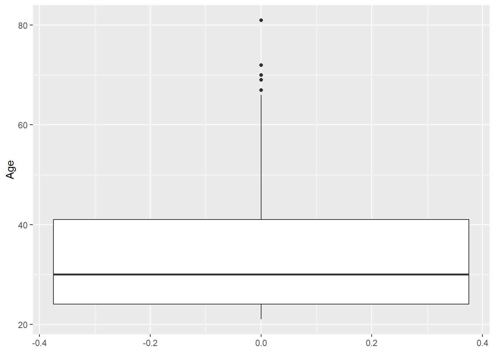
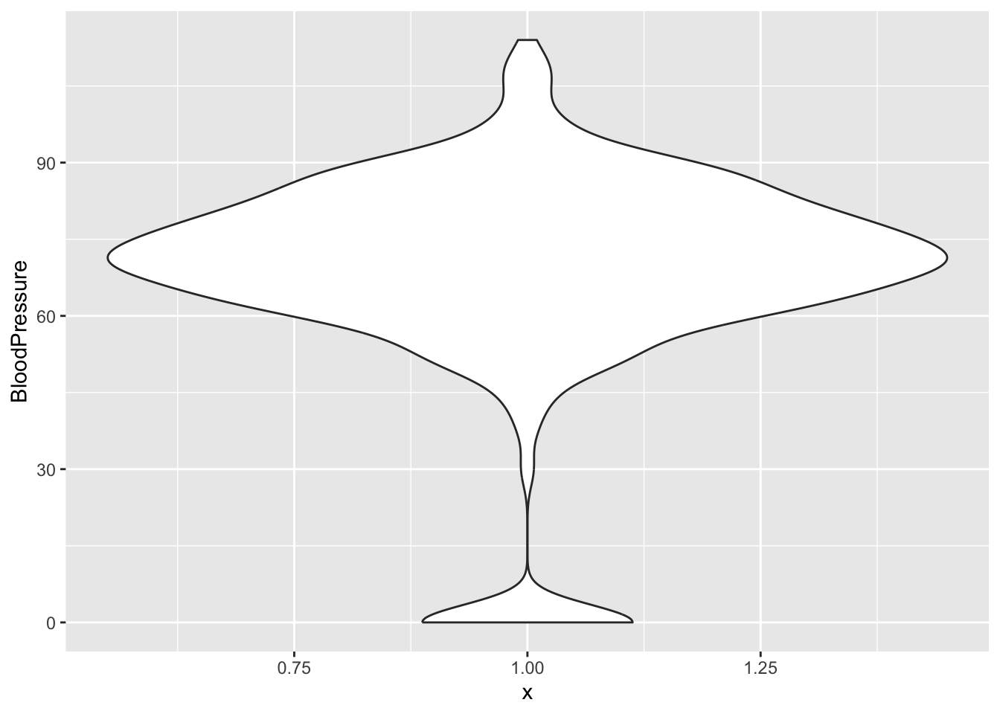
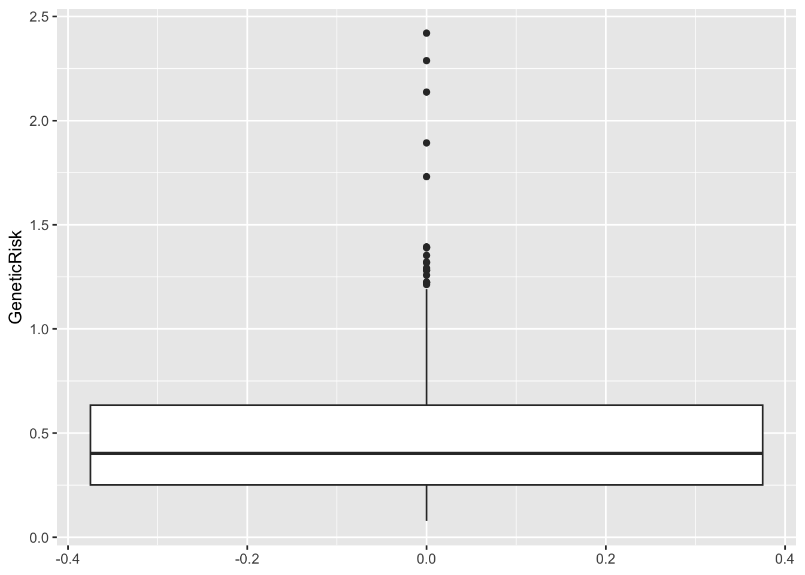
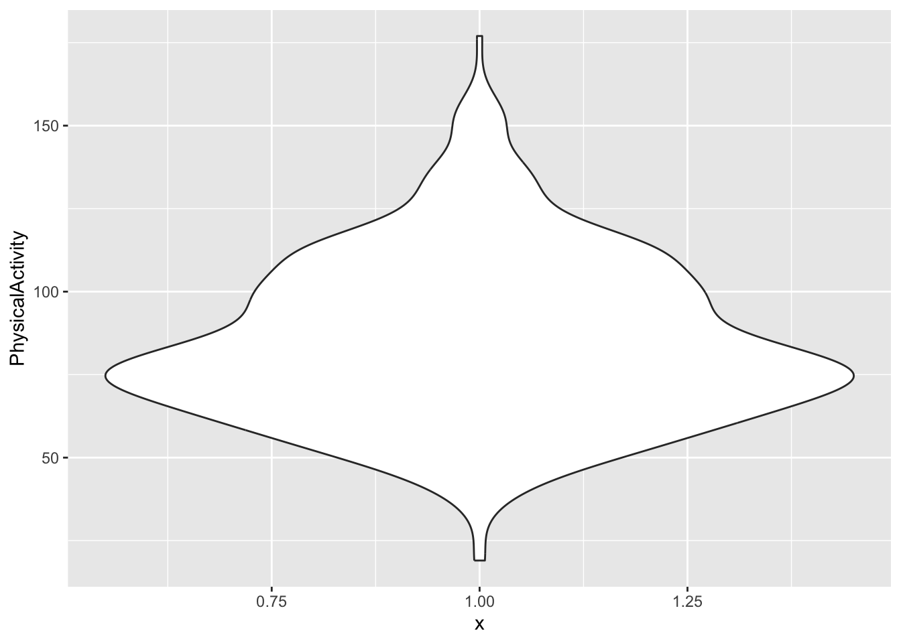
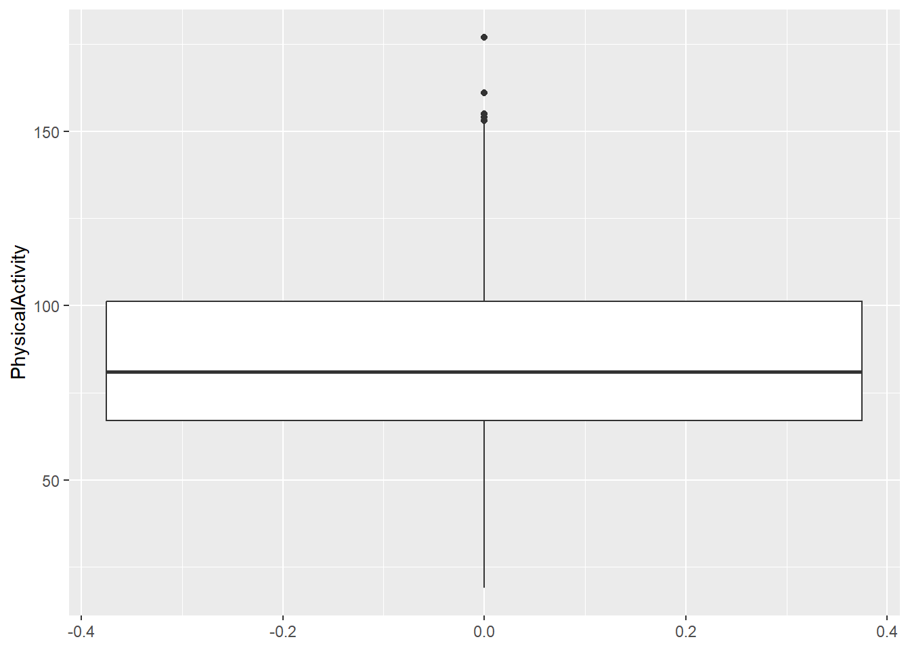

library(tidyverse)
library(readxl)Presentation 1 - Solutions: Base R and Tidyverse / Data Clean-up and Wrangling
Getting started
- Load packages.
- Load in the
diabetes_clinical_toy_messy.xlsxdata set.
diabetes_clinical <- read_excel('../data/diabetes_clinical_toy_messy.xlsx')
head(diabetes_clinical)# A tibble: 6 × 9
ID Sex Age BloodPressure GeneticRisk BMI PhysicalActivity Smoker
<dbl> <chr> <dbl> <dbl> <dbl> <dbl> <dbl> <chr>
1 9046 Male 34 84 0.619 24.7 93 Unknown
2 51676 Male 25 74 0.591 22.5 102 Unknown
3 31112 Male 30 0 0.839 32.3 75 Former
4 60182 Male 50 80 0.178 34.5 98 Unknown
5 1665 Female 27 60 0.206 26.3 82 Never
6 56669 Male 35 84 0.286 35 58 Smoker
# ℹ 1 more variable: Diabetes <dbl>Explore the data
Use can you either base R or/and tidyverse to solve the exercises.
- How many missing values (NA’s) are there in each column.
colSums(is.na(diabetes_clinical)) ID Sex Age BloodPressure
0 0 0 0
GeneticRisk BMI PhysicalActivity Smoker
5 0 0 0
Diabetes
0 - Check the distribution of each of the variables. Consider that they are of different classes. Do any of the distributions seam odd to you?
For the categorical variables:
The Sex values are not consistent.
table(diabetes_clinical$Sex)
FEMALE Female Male male
2 291 237 2 table(diabetes_clinical$Smoker)
Former Never Smoker Unknown
132 159 162 79 table(diabetes_clinical$Diabetes)
0 1
267 265 For the numerical variables:
diabetes_clinical %>%
ggplot(aes(y = Age)) +
geom_boxplot()
Odd: Some BloodPressure values are 0.
diabetes_clinical %>%
ggplot(aes(y = BloodPressure)) +
geom_boxplot()
diabetes_clinical %>%
ggplot(aes(y = GeneticRisk)) +
geom_boxplot()Warning: Removed 5 rows containing non-finite outside the scale range
(`stat_boxplot()`).
Odd: Some BMI values are 0.
diabetes_clinical %>%
ggplot(aes(y = BMI)) +
geom_boxplot()
diabetes_clinical %>%
ggplot(aes(y = PhysicalActivity)) +
geom_boxplot()
Clean up the data
Now that we have had a look at the data, it is time to correct fixable mistakes and remove observations that cannot be corrected.
Consider the following:
What should we do with the rows that contain NAs? Do we remove them or keep them?
Which mistakes in the data can be corrected, and which cannot?
Are there zeros in the data? Are they true zeros or errors?
Do you want to change any of the classes of the variables?
- Clean the data according to your considerations.
Hint
Have a look at BloodPressure, BMI, Sex, and Diabetes.
My considerations:
When modelling, rows with NA’s in the variables we want to model should be removed as we cannot model on NAs. Since there are only NA’s in
GeneticRisk, the rows can be left until we need to do a model withGeneticRisk.The uppercase/lowercase mistakes in
Sexdoes not influence the interpretability of the variables, so the are simply changes such that the first letter is a capital letter and the remaining letter are lowercase.There are zeros in
BMIandBloodPressure. These are considered false zeros as is does not make sense to have these variables as 0.Diabetesis changed to factor
diabetes_clinical$Sex %>% table().
FEMALE Female Male male
2 291 237 2 nrow(diabetes_clinical)[1] 532diabetes_clinical_clean <- diabetes_clinical %>%
mutate(Sex = str_to_title(Sex),
Diabetes = Diabetes %>% factor()) %>%
filter(BMI != 0, BloodPressure != 0) Check the different sexes now.
diabetes_clinical_clean$Sex %>% table().
Female Male
272 221 Access number of rows.
nrow(diabetes_clinical_clean)[1] 493Meta Data
- Perform step 2-5 from above and do data exploration and cleaning workflow for the
diabetes_meta_toy_messy.xlsxdata set.
6.2. Load the data set.
diabetes_meta <- read_excel('../data/diabetes_meta_toy_messy.xlsx')
head(diabetes_meta)# A tibble: 6 × 3
ID Married Work
<chr> <chr> <chr>
1 43717 No Public
2 57419 Yes Private
3 54918 Yes Private
4 8154 No Private
5 <NA> Yes Private
6 59906 <NA> Public Use can you either base R or/and tidyverse to solve the exercises. For now, we just explore the data.
6.3. How many missing values (NA’s) are there in each column.
colSums(is.na(diabetes_meta)) ID Married Work
5 5 2 Check if any of the rows are NA in all three variables.
rowSums(is.na(diabetes_meta)) %>% table().
0 1
520 12 6.4. Check the distribution of each of the variables. Consider that they are of different classes. Do any of the distributions seam odd to you?
For the categorical variables:
table(diabetes_meta$Married)
^Yes N#o No Y&es Y%es Ye(s YES Yes
1 1 184 1 1 1 3 335 table(diabetes_meta$Work)
-Public *Public P-ublic P!UBLIC P#rivate
1 1 1 1 1
P%rivate Priva.te Privat-e Privat+e PRIVATE
1 1 1 1 1
Private Pu.blic Publ&ic Publi-c Publi+c
275 1 1 1 1
Public Retired S@elf-employed Se.lf-employed Self-emplo$yed
146 6 1 1 1
Self-employe)d SELF-EMPLOYED Self-employed Self.-employed
1 1 83 1 - Clean the data according to your considerations.
My considerations:
Both
MarriedandWorkhas a lot of mistakes. From looking at the mistakes the mistakes can be fixed like this:Marriedis changed to ‘No’ if an ‘N’ is present in the string and ‘Yes’ if ‘Y’ is present. ForWorkthe values that contain a capital “S” can be changed to “Self-employed”, “Retired” it looking fine, and for “Public” and “Private”, we need to correct these manually.IDis changed to numerical to match thediabetes_cleandataset.
nrow(diabetes_meta)[1] 532diabetes_meta_clean <- diabetes_meta %>%
mutate(Married = case_when(str_detect(Married, 'N') ~ 'No',
str_detect(Married, 'Y') ~ 'Yes',
.default = NA
),
Work = case_when(str_starts(Work, 'S') ~ 'Self-employed',
Work %in% c('-Public', '*Public', '*Public', 'P!UBLIC', 'Pu.blic', 'Publ&ic', 'Publi-c', 'Publi+c', 'Public') ~ 'Public',
Work %in% c('P#rivate', 'P%rivate', 'Priva.te', 'Privat-e', 'Privat+e', 'Private', 'PRIVATE') ~ 'Private',
.default = NA
),
ID = as.numeric(ID)
)
head(diabetes_meta_clean)# A tibble: 6 × 3
ID Married Work
<dbl> <chr> <chr>
1 43717 No Public
2 57419 Yes Private
3 54918 Yes Private
4 8154 No Private
5 NA Yes Private
6 59906 <NA> Public nrow(diabetes_meta_clean)[1] 532Join the datasets
- Consider what variable the datasets should be joined on.
Hint
The joining variable must be the same type in both datasets.
- Join the datasets by the variable you selected above.
diabetes_join <- diabetes_clinical_clean %>%
left_join(diabetes_meta_clean, by = 'ID')- How many rows does the joined dataset have? Explain why.
Hint
Because we used left_join, only the IDs that are in diabetes_clinical_clean are kept.
nrow(diabetes_join)[1] 493- Export the joined dataset. Think about which directory you want to save the file in.
writexl::write_xlsx(diabetes_join, '../out/diabetes_join.xlsx')